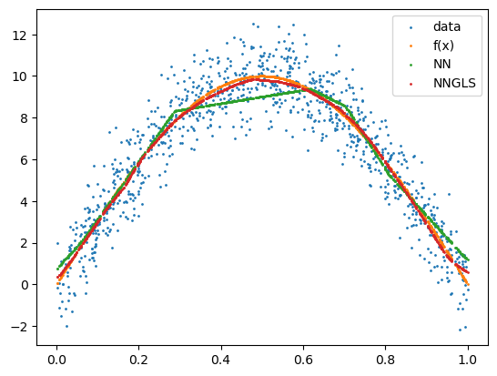
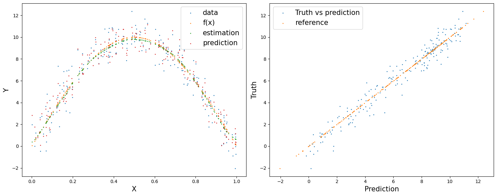
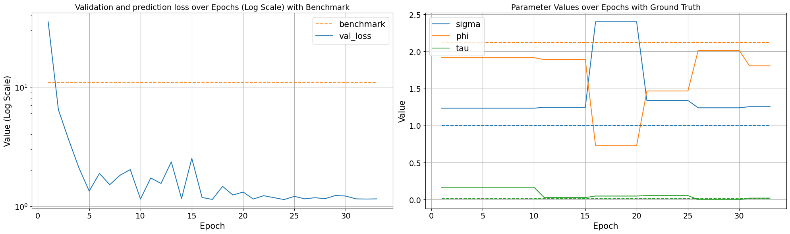
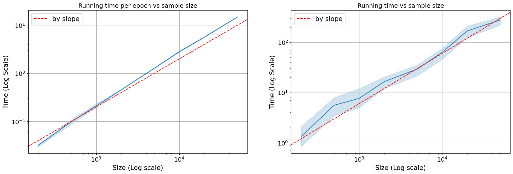

Example simulation
%load_ext autoreload
%autoreload 2
import torch
import geospaNN
import numpy as np
import time
import pandas as pd
import seaborn as sns
import matplotlib.pyplot as plt
class DropoutLayer(torch.nn.Module):
def __init__(self, p):
super().__init__()
self.p = p
def forward(self, input):
if self.training:
u1 = torch.rand(*input.shape)<self.p
return u1*input
else:
return input * self.p
def f5(X): return (10*np.sin(np.pi*X[:,0]*X[:,1]) + 20*(X[:,2]-0.5)**2 + 10*X[:,3] +5*X[:,4])/6
def f1(X): return 10 * np.sin(np.pi * X)
sigma = 1
phi = 3
tau = 0.01
theta = torch.tensor([sigma, phi / np.sqrt(2), tau])
p = 1; funXY = f1
n = 1000
nn = 20
batch_size = 50
torch.manual_seed(2024)
X, Y, coord, cov, corerr = geospaNN.Simulation(n, p, nn, funXY, theta, range=[0, 10])
X, Y, coord, _ = geospaNN.spatial_order(X, Y, coord, method = 'max-min')
data = geospaNN.make_graph(X, Y, coord, nn)
torch.manual_seed(2024)
np.random.seed(0)
data_train, data_val, data_test = geospaNN.split_data(X, Y, coord, neighbor_size = nn,
test_proportion = 0.2)
torch.manual_seed(2024)
start_time = time.time()
mlp_nn = torch.nn.Sequential(
torch.nn.Linear(p, 100),
torch.nn.Flatten(),
DropoutLayer(0.9),
torch.nn.ReLU(),
torch.nn.Linear(100, 50),
torch.nn.ReLU(),
torch.nn.Linear(50, 20),
torch.nn.ReLU(),
torch.nn.Linear(20, 1),
)
nn_model = geospaNN.nn_train(mlp_nn, lr = 0.01, min_delta = 0.001)
training_log = nn_model.train(data_train, data_val, data_test)
theta0 = geospaNN.theta_update(torch.tensor([1, 1.5, 0.01]), mlp_nn(data_train.x).squeeze() - data_train.y, data_train.pos, neighbor_size = 20)
mlp_nngls = torch.nn.Sequential(
torch.nn.Linear(p, 100),
torch.nn.Flatten(),
DropoutLayer(0.9),
torch.nn.ReLU(),
torch.nn.Linear(100, 50),
torch.nn.ReLU(),
torch.nn.Linear(50, 20),
torch.nn.ReLU(),
torch.nn.Linear(20, 10),
torch.nn.ReLU(),
torch.nn.Linear(10, 1),
)
model = geospaNN.nngls(p=p, neighbor_size=nn, coord_dimensions=2, mlp=mlp_nngls, theta=torch.tensor(theta0))
nngls_model = geospaNN.nngls_train(model, lr = 0.01, min_delta = 0.001)
training_log = nngls_model.train(data_train, data_val, data_test,
Update_init = 10, Update_step = 5)
end_time = time.time()
Epoch 00053: reducing learning rate of group 0 to 5.0000e-03.
INFO: Early stopping
End at epoch56
Theta updated from
[1. 1.5 0.01]
Theta updated from
[1.23325332 1.91505429 0.16597437]
to
[1.24555493 1.88866008 0.02749452]
Theta updated from
[1.24555493 1.88866008 0.02749452]
to
[2.39995167 0.72656793 0.04760227]
Epoch 00016: reducing learning rate of group 0 to 5.0000e-03.
Theta updated from
[2.39995167 0.72656793 0.04760227]
to
[1.33750198 1.46555775 0.05409349]
Epoch 00023: reducing learning rate of group 0 to 2.5000e-03.
Theta updated from
[1.33750198 1.46555775 0.05409349]
to
[1.23864962 2.01261422 0. ]
Epoch 00030: reducing learning rate of group 0 to 1.2500e-03.
Theta updated from
[1.23864962 2.01261422 0. ]
to
[1.2539044 1.80523262 0.01950352]
INFO: Early stopping
End at epoch33
# Compute benchmark MSE (always predicting the mean)
benchmark_preds = torch.full(data_test.y.shape, data_train.y.mean())
benchmark_mse = torch.nn.functional.mse_loss(benchmark_preds, data_test.y)
print(f'Benchmark MSE: {benchmark_mse:.3f}')
Benchmark MSE: 10.976
print(f"\rRunning time: {end_time - start_time} seconds")
Running time: 20.763789176940918 seconds
plt.clf()
plt.scatter(X.detach().numpy(), Y.detach().numpy(), s = 1, label = 'data')
plt.scatter(X.detach().numpy(), funXY(X.detach().numpy()), s = 1, label = 'f(x)')
plt.scatter(X.detach().numpy(), mlp_nn(X).detach().numpy(), s = 1, label = 'NN')
plt.scatter(X.detach().numpy(), mlp_nngls(X).detach().numpy(), s = 1, label = 'NNGLS')
plt.legend()
plt.show()

test_predict = model.predict(data_train, data_test)
fig, axes = plt.subplots(1, 2, figsize=(15, 6))
axes[0].scatter(data_test.x.detach().numpy(), data_test.y.detach().numpy(), s = 1, label = 'data')
axes[0].scatter(data_test.x.detach().numpy(), funXY(data_test.x.detach().numpy()), s = 1, label = 'f(x)')
axes[0].scatter(data_test.x.detach().numpy(), mlp_nngls(data_test.x).detach().numpy(), s = 1, label = 'estimation')
axes[0].scatter(data_test.x.detach().numpy(), test_predict.detach().numpy(), s = 1, label = 'prediction')
axes[0].set_xlabel('X', fontsize=15)
axes[0].set_ylabel('Y', fontsize=15)
axes[0].legend(prop={'size': 15})
axes[1].scatter(test_predict.detach().numpy(), data_test.y.detach().numpy(), s = 1, label = 'Truth vs prediction')
axes[1].scatter(data_test.y.detach().numpy(), data_test.y.detach().numpy(), s = 1, label = 'reference')
axes[1].set_xlabel("Prediction", fontsize=15)
axes[1].set_ylabel("Truth", fontsize=15)
axes[1].legend(prop={'size': 15})
plt.tight_layout()

epoch = len(training_log["val_loss"])
training_log["epoch"] = list(range(1, epoch + 1))
training_log["est_loss"] = None
training_log = pd.DataFrame(training_log)
# Melting the dataframe to make it suitable for seaborn plotting
training_log_melted = training_log[["epoch", "val_loss"]].melt(id_vars='epoch', var_name='Variable', value_name='Value')
# Finding the color used for the 'metric' in the plot
palette = sns.color_palette()
metric_color = palette[1] # Assuming 'metric' is the second line in the plot
# Plotting with seaborn
# Creating two subplots side by side
fig, axes = plt.subplots(1, 2, figsize=(20, 6))
benchmark_line = axes[0].hlines(y=benchmark_mse, xmin=1, xmax=epoch, color=metric_color, linestyle='--', label='benchmark')
sns.lineplot(ax=axes[0], data=training_log_melted, x='epoch', y='Value', hue='Variable', style='Variable', markers=False, dashes=False)
axes[0].set_title('Validation and prediction loss over Epochs (Log Scale) with Benchmark', fontsize=14)
axes[0].set_xlabel('Epoch', fontsize=15)
axes[0].set_ylabel('Value (Log Scale)', fontsize=15)
axes[0].set_yscale('log')
axes[0].legend(prop={'size': 15})
axes[0].tick_params(labelsize=14)
axes[0].grid(True)
# Second plot (sigma, phi, tau)
kernel_params_melted = training_log[["epoch", "sigma", "phi", "tau"]].melt(id_vars='epoch', var_name='Variable', value_name='Value')
ground_truth = {'sigma': sigma, 'phi': phi/np.sqrt(2), 'tau': tau}
sns.lineplot(ax=axes[1], data=kernel_params_melted, x='epoch', y='Value', hue='Variable', style='Variable', markers=False, dashes=False)
palette = sns.color_palette()
for i, (param, gt_value) in enumerate(ground_truth.items()):
axes[1].hlines(y=gt_value, xmin=1, xmax=epoch, color=palette[i], linestyle='--')
axes[1].set_title('Parameter Values over Epochs with Ground Truth', fontsize=14)
axes[1].set_xlabel('Epoch', fontsize=15)
axes[1].set_ylabel('Value', fontsize=15)
axes[1].legend(prop={'size': 15})
axes[1].tick_params(labelsize=14)
axes[1].grid(True)
plt.tight_layout()

time_df = pd.read_csv("./data/running_time.csv")
time_df['Time per epoch'] = time_df['time']/time_df['epoch']
fig, axes = plt.subplots(1, 2, figsize=(20, 6))
sns.lineplot(ax=axes[0], data=time, x='size', y='Time per epoch', markers=False, dashes=False)
axes[0].set_title('Running time per epoch vs sample size', fontsize=14)
axes[0].axline((200, 0.04), slope=1, color='red', label='by slope', linestyle='--')
axes[0].set_xlabel('Size (Log scale)', fontsize=15)
axes[0].set_ylabel('Time (Log Scale)', fontsize=15)
axes[0].set_yscale('log')
axes[0].set_xscale('log')
axes[0].legend(prop={'size': 15})
axes[0].tick_params(labelsize=14)
axes[0].grid(True)
sns.lineplot(ax=axes[1], data=time, x='size', y='time', markers=False, dashes=False)
axes[1].set_title('Running time vs sample size', fontsize=14)
axes[1].axline((200, 1.2), slope=1, color='red', label='by slope', linestyle='--')
axes[1].set_xlabel('Size (Log scale)', fontsize=15)
axes[1].set_ylabel('Time (Log Scale)', fontsize=15)
axes[1].set_yscale('log')
axes[1].set_xscale('log')
axes[1].legend(prop={'size': 15})
axes[1].tick_params(labelsize=14)
axes[1].grid(True)
#axes[1].set_yscale('log')
